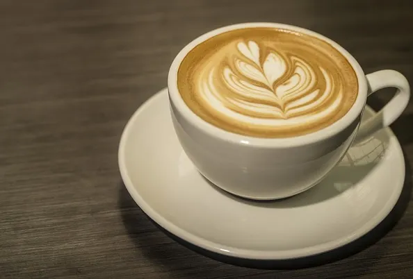
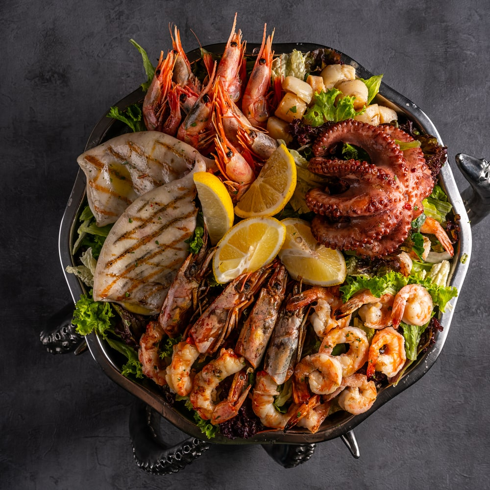

Welcome to Cafe Bistro
Enjoy our delicious coffee and food!
MENU

1. Expresso
- Cappuccino 280 Taka
- Latte 300 Taka
- Mocha 250 Taka
- Americano 350 Taka

2. Appetizers
- Classic Caprese Skewers 500 Taka
- A fresh and elegant finger food that takes almost no time to prepare.
- Baked Jalapeño Popper Dip 600 Taka
- A rich, warm, and bubbling dip that is always the life of the party.
- Prosciutto and Melon Bites 400 Taka
- A sweet and savory combination that requires zero cooking.
- Stuffed Mushrooms 550 Taka
- A gourmet appetizer filled with a delicious blend of herbs and cheese.

3. Elegant Seafood Menu
- Shrimp Cocktail 700 Taka
- Jumbo chilled shrimp served with a zesty cocktail sauce.
- Creamy Tomato Basil Bisque 1200 Taka
- A velvety, comforting soup paired with a mini toasted parmesan crouton.
- Pan-Seared Salmon 1500 Taka
- A perfectly crisp salmon fillet served with a garlic-herb butter, roasted asparagus, and creamy mashed potatoes.
- Vanilla Bean Panna Cotta 1000 Taka
- A silky Italian cream dessert topped with a fresh raspberry coulis.
© 2024 Cafe Bistro. All rights reserved.